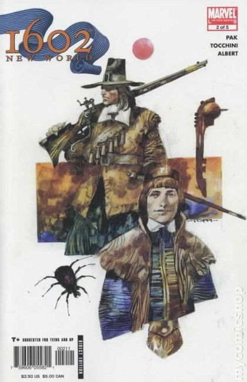
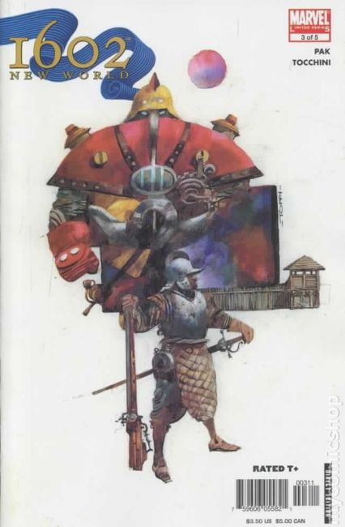
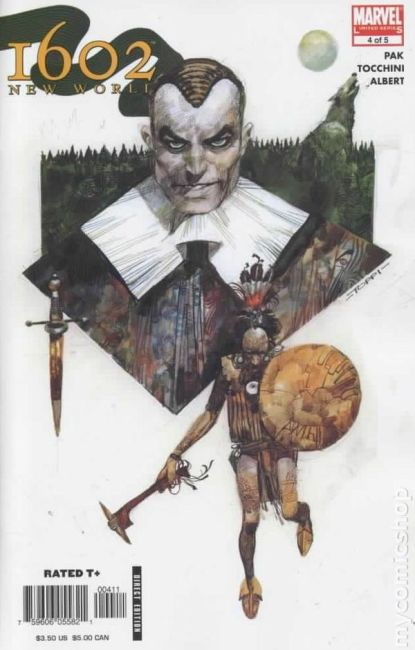
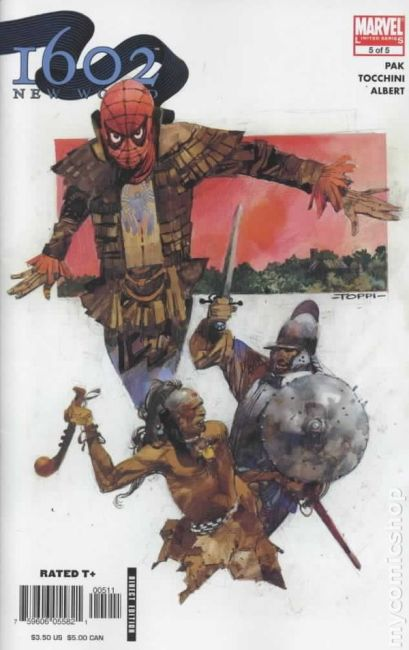

Return to the world of 1602! Pick up where the best-selling limited series left off, America, The New World! When Captain America was thrust back in time, it changed reality as we know it. Dinosaurs still roam the earth and the Marvel super heroes we know came to exist 500 years early. Witness David Bruce Banner and Peter Parquagh become The Hulk and Spider-Man in the most eagerly-awaited miniseries event of the year!

A new law is passed in the New World outlawing super-powered 'Witchbreed.' Can Peter Parquagh keep his new powers a secret in a place that needs a Spider-Man so badly? Can Robert Banner escape the hulking beast who hides in his fear and anger? Joining the rest of the Marvel heroes and villains reborn in the 17th Century comes another classic Marvel character!

Battle lines are being drawn in the New World. Norman Osborne's master plan is nearing completion. Can Peter Parquagh stop him? And witness the showdown between Antonio Stark and David Banner as Lord Iron and the Hulk do battle! Can the colony survive the outcome?

War comes to the colony of Roanoke! It's the colonists vs. the Indians and Iron Man vs. the Hulk! Peter Parquagh may have super powers, but will they be enough to stop this devastating conflict?